HelloWorldEseguire BuilderOneCercare sul desktop l'icona di BuilderOne ed eseguirla. Se l'icona di BuilderOne non esiste è possibile crearla copiandola dall'icona di LabelOne e aggiungendo nelle opzioni di esecuzione -PED preceduto da uno spazio. Un altro modo per eseguire BuilderOne è quello di Eseguire LabelOne e dal menu progetti premere su Editor di Progetti. Per creare automaticamente l'icona di BuilderOne controllare nelle Opzioni di LabelOne (MENU->Configura->Opzioni->Varie) che sia fleggato "Aggiorna Icona sul desktop". |
|
|
|
Clicchiamo sul progetto per aprirlo. In questo modo possiamo passare alla fase successiva. E' importante selezionare il progetto, perchè solo in questo modo tutte le operazioni successive verranno fatte sul progetto selezionato. 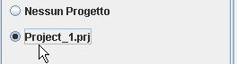 Se non selezioniamo un progetto, le fasi successive sono inibite. Infatti troveremo il pulsante per la gestione dei Frames disabilitato. |
Creare il primo FrameClicchiamo sul pannello Frames 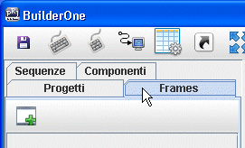 |
e poi clicchiamo sull'icona "Nuovo Frame". 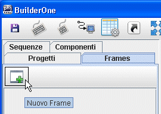 |
Si aprirà una finestra che richiede l'inserimento di un nome per il frame che stiamo creando. 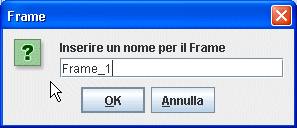 Digitiamo Frame_1 e poi clicchiamo su OK. |
Il nuovo frame apparirà nella lista dei frames. In tale lista ci sono tutti i frames relativi al progetto aperto. 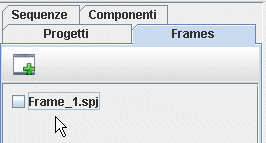 |
Selezioniamo il frame per aprirlo e per poter accedere alla fase successiva dell'editing del frame. 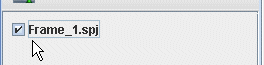 Se non si seleziona un frame, non è possibile accedere alle fasi successive. Infatti nel pannello Componenti, troveremo tutti i componenti disabilitati. Nella fase successiva andremo a impostare le dimensioni del frame. Solo le dimensioni del frame sono necessarie per proseguire correttamente. |
Stile del FrameSi tratta di un insieme di informazioni che permettono di adattare il frame alle nostre esigenze. Se nel pannello Proprietà non sono visibili queste informazioni vuol dire o che nessun frame è aperto, oppure che è stato selezionato un componente presente nel frame e quindi che le proprietà si riferiscono a tale componente. Per "vedere" le proprietà del frame basta cliccare su un punto del frame in cui non vi sono componenti. Questo deseleziona qualsiasi componente e nelle proprità appariranno quelle relative al frame. 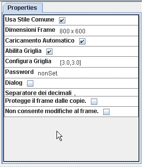 |
Usa Stile ComuneQuesta opzione è molto comoda per creare freme che hanno tutti le stesse impostazioni, cioè lo stesso stile (stesse dimensioni, caricamento automatico, griglia...). Per default un frame è creato con questa opzione abilitata. Se modifichiamo un'opzione della lista, dopo aver già creato dei frames, le modifiche saranno apportate a tutti i frame che usano lo stile comune. Ogni nuovo frame creato avrà le impostazioni scelte nello stile comune. Quindi se prima di creare un frame la griglia era abilitata, il nuovo frame creato avrà la griglia abilitata. |
Dimensioni di un FrameClicchiamo sulla destra di suddetta voce per modificare le dimensioni. 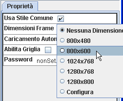 Selezioniamo la dimensione desiderata. Tale dimensione ci permette di creare un frame così come apparirà in esecuzione. Se il frame verrà usato su in Touch 800x600 conviene rispettare la dimensione. Se la dimensione no è rispettata, alcuni componenti potrebbero uscire dalla schermo. E' sempre possibile usare l'opzione di esecuzione -RSZ (vedi opzioni di esecuzione) che consente un ridimensionamento dei frame per adeguarli allo schermo in uso. Questo però richiede una certa potenza di calcolo che su alcuni PC lenti puo rallentare l'apertura del progetto. |
Caricamento automaticoSe un progetto è costituito da più frame, solo il frame di ingresso è caricato, poi la prima volta che entreremo negli altri frame, questi verranno caricati. Questo comporta un piccolo tempo di ritardo da quando si clicca sul pulsante che passa ad un nuovo frame e l'apertura effettiva del frame. Tale tempo è necessario per caricare il frame e realizzare il suo aspetto grafico. Se utilizziamo l'opzione Cricamneto Automatico, il caricamento di tutti i frames che la usano, sarà effettuato all'apertura del programma, rallentando la faste di partenza, ma velocizzando il primo accesso ad ogni frame. |
Abilita GrigliaUna griglia configurabile consente di posizionare con maggiore semplicità gli oggetti sullo schermo. Le dimensioni degli oggetti e la loro posizione potranno assumere solo alcuni valori rendendo più semplice fare dimensioni ughuali. |
PasswordE' possibile associare una password al frame. In questo modo quando si tenta di accedere al frame verrà chiesta la password. Solo se sarà quella giusta si entra effettivamente nel frame. Con questa opzione due pulsanti che accedono allo stesso frame saranno entrambi soggetti alla stessa password. Se si vuole usare password diverse per i due pulsanti, o si vuole che alcuni pulsanti possano accedere al frame senza password, allora è necessario inserire la password nei pulsanti e non nel frame. La finestra per l'inserimento della password può essere configurata modificando le dimensioni del font. In questo modo tutti i campi e i pulsanti che la compongono diventano più grandi. Per cambiare il font alla finestra per l'inserimento della password usare il relativo pulsante nella barra dei menu. 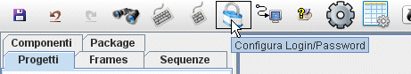 |
LoginSi tratta di un altro modo per proteggere l'ingresso in un frame. Questa volta al frame si associa un livello. 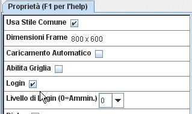 |
Mediante il Gestore Login (presente nel pannello componenti, fra le macro): 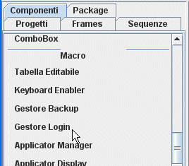 |
sarà possibile creare una lista di accessi: 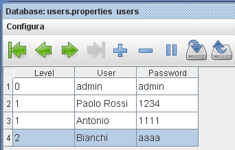 Per usare il Gestore Login, bisogna inserirlo in un frame che dedicheremo alle configurazioni del programma. Alla fine di questo tutorial verrà mostrato come creare tale frame. |
Il record 1 è creato di default, ma può essere cancellato e sostituito da altri valori. Il database Users è creato nella cartella Data. Puo' essere gestito comodamente dal LogIn manager che si trova tra le Macro nel pannello componenti. Un frame a cui è stato assegnato il livello 1 può essere visitato dallo user "Antonio", "Paolo Rossi", "admin", ma non da "Bianchi" che non ha le credenziali sufficenti. Uno user con livello N può accedere a tutti i frame che hanno livello >= N. Lo User con livello 0 ha il massimo accesso. Può accedere a tutti i frame. Un Login può essere assegnato sia ad un frame che ad un singolo pulsante. La finestra per l'inserimento del login è configurabile nelle sue dimensioni attraverso il font. In questo modo i testi, i campi e i pulsanti che la compongono diventano più grandi. Per configurarla usare il relativo pulsante nella barre dei menu. Tutte le volte che si entra in un frame o si usa un pulsante protetto da login, lo UserName viene salvato in un file UserName.txt in modo da poterlo usare per scopi statistici o per capire ch ha fatto una determinata azione. |
DialogLa modalità Dialog genera finestre non resizabili, non non a tutto schermo, modali cioè che richiedono di essere chiuse per continuare. Tali finestre sono utili per mostrare un messaggio rivolto all'utilizzatore. Non necessitano di inserimento di dati, ma volendo è possibile usarle per inserire dei dati. in una dialog non è possibile usare un pulsante per passare ad un altro frame, ma sono consentiti gli altri pulsanti. |
Separatore dei DecimaliCon questa opzione è possibile indicare a BuilderOne quale è il separatore dei decimali. Questo avrà effetto sulle operazioni e sulla comprensione dei valori decimali. |
Proteggere il Frame dalle copieServe per evitare che il progetto venga copiato ed
eseguito su qualunque computer su cui c'è un
FinalProject. Protezione dei Diritti D'autore Se non è usata l'opzione "Non consente modifiche
al frame" il frame potrà essere aperto da un
qualunque BuolderOne e modificato, ma non potranno essere
rimosse le protezioni. |
Non consente modifiche al frameEvita la manomissione e la lettura del codice da chi non ne è l'autore. Solo l'autore potrà editare il frame con BuilderOne. |
Editing del FrameOra andremo ad aggiungere dei componenti sul frame. I componenti si trovano nel pannello Componenti sulla sinistra dell'area di lavoro. 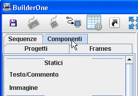 |
Pulsante EsciServirà per uscire dal frame o dal progetto. Il pulsante Esci è nel gruppo "Azioni". Clicchiamo sul menù e poi portiamo il mouse al centro dell'area di lavoro. Il mouse non va trascinato, ma solo spostato.
|
Clicchiamo nel punto in cui vogliamo inserire il pulsante esci. 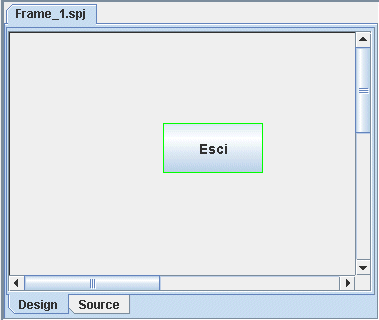 |
Ora siamo pronti per eseguire il nostro progetto che conterrà un unico frame ed un unico pulsante. Premiamo sul Pulsante Esegui frame. 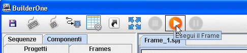 |
Poichè non abbiamo ancora salvato il frame realizzato, ci verra chiesto di salvarlo. Premiamo su Conferma. 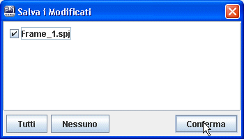 |
Il progetto verrà eseguito e mostrerà nel suo interno il pulsante esci. Molto probabilmente Tale pulsante non è nel punto in cui vorremo, possiamo facilmente spostarlo trascinandolo con il mouse. A tale scopo usciamo dal progetto premendo il pulsante esci o la chiudendo la finestra. 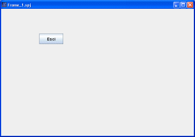 |
In questo modo torneremo nell'editor. Posizioniamoci con il mouse sul pulsante esci, clicchiamo e trasciniamo per muoverlo. 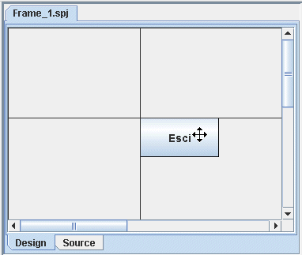 Può succedere che l'intera dimensione del frame non entra nella parte centrale dell'area di lavoro. Verranno visualizzate delle barre di scorrimento che consentono di raggiungere qualunque punto del frame. |
Un altro modo per massimizzare l'area in cui il frame viene visualizzato, durante la fase di editing, è quello di usare il pulsante "A Tutto Schermo" 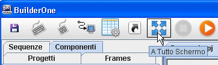 Dalla modalità "A Tutto Schermo" si esce premendo il tasto "esc" della tastiera. |